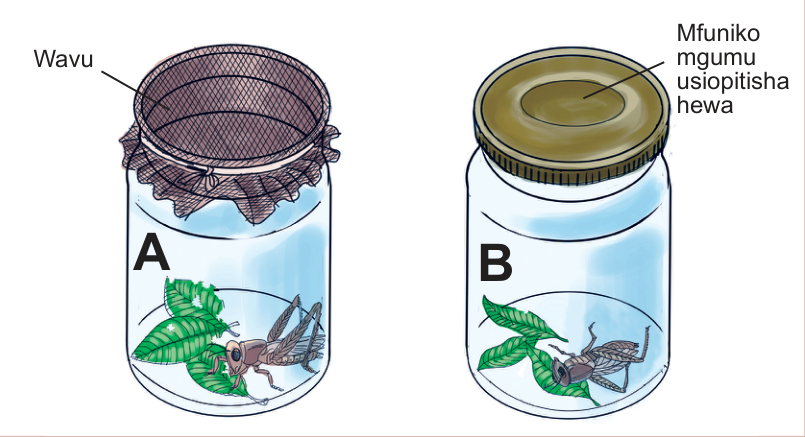

4.
Wachunguze panzi hao kwenye chupa A na B kwa muda wa siku nne.

WavuABMfuniko mgumu usiopitisha hewa
Kielelezo namba 5: Umuhimu wa hewa kwa wanyama
Matokeo: Andika taarifa ya matokeo katika uchunguzi wako.
Hitimisho: Andika hitimisho la jaribio ulilolifanya.